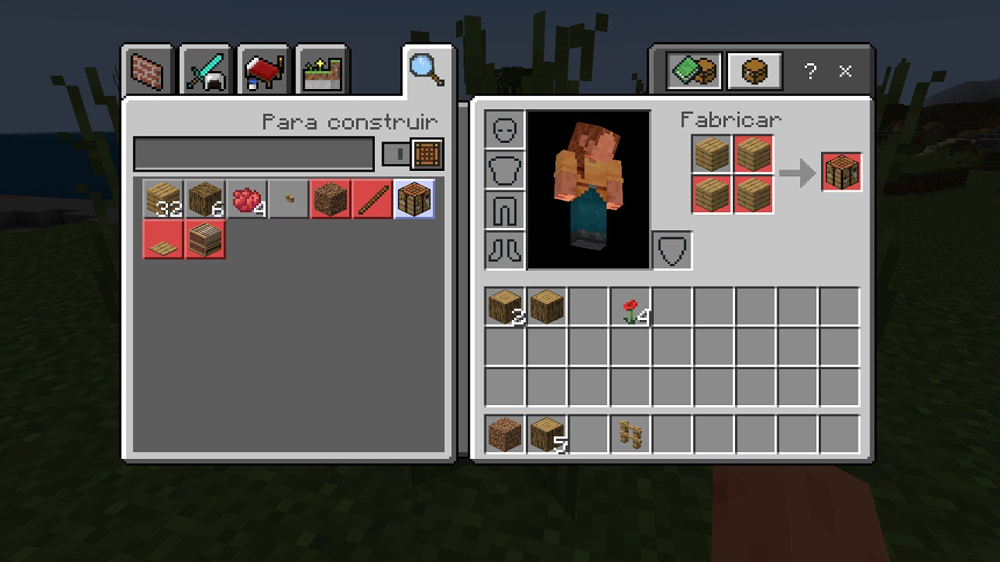

CRAFTEO
En el juego podrás no sólo construir todo cuanto puedas imaginar, sino también podrás crear tus propios objetos. A este proceso se le llama popularmente craftear y para ello necesitarás combinar distintos materiales que hayas recopilado en el juego
En Minecraft es completamente esencial, pues se trata de uno de los ejes vertebradores de la experiencia. Para construir necesitamos cosas. Y para conseguir esas cosas necesitamos otras cosas. Y así sin parar, en una rueda viciosa que, la verdad, es especialmente divertida. De todas formas, es importante recalcar que no es posible fabricar de la nada. Para ello, necesitamos primero ciertas herramientas. Y una de las primeras que se debe tener en cuenta es la mesa de trabajo.
Aprender a utilizar la cuadrícula
Una vez que tengamos los tablones en nuestro inventario, será tan sencillo como abrirlo para ver todos los artículos que poseemos. Si nos fijamos, el inventario también nos mostrará la conocida como cuadrícula de elaboración. Esta se compone de cuatro espacios cuadrados vacíos con una flecha que apunta a un quinto espacio cuadrado vacío, debajo de "Elaboración".
Nuestro objetivo es colocar los suministros que queramos utilizar para fabricar en la rejilla. En este caso, deberemos seleccionar los bloques de madera. Para ello, seleccionaremos la opción "Artesanía". Y como tenemos cuatro bloques, ese quinto espacio servirá para haber creado la tan ansiada mesa de trabajo. ¡Así de simple!
Mesa de Crafteo
Presionar usar (con click izquierdo) en una mesa de fabricación nos permite abrir una cuadrícula de fabricación 3×3, que le permite al jugador fabricar más objetos que los que podría con la cuadrícula 2×2 del inventario.
El libro de recetas se encuentra a la izquierda, el cual nos muestra recetas de fabricación para referenciarnos y fabricar elementos rápidamente.